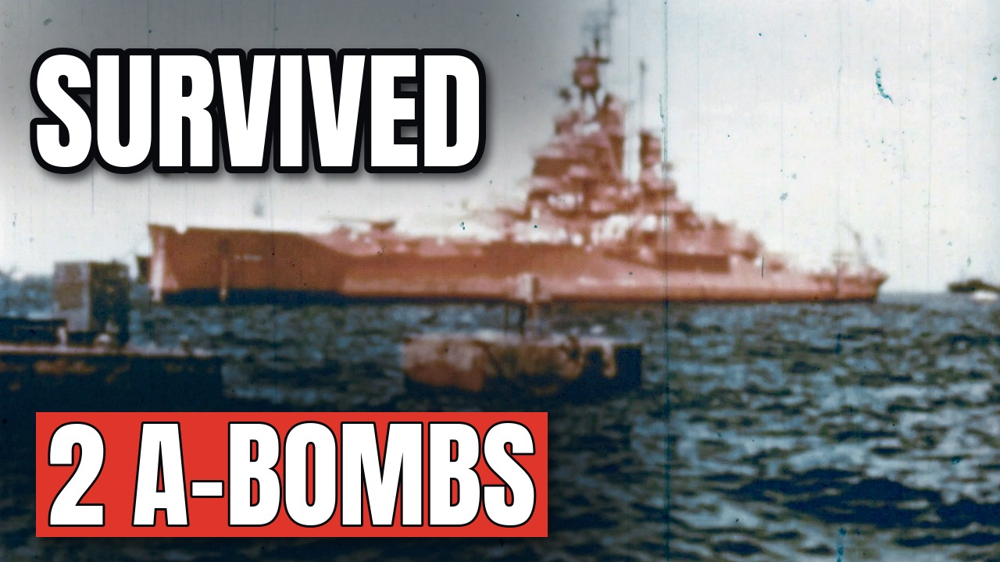
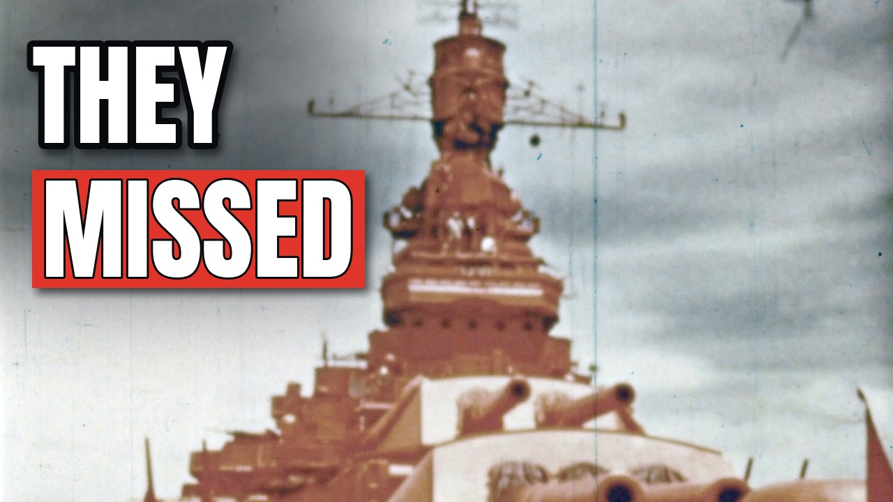
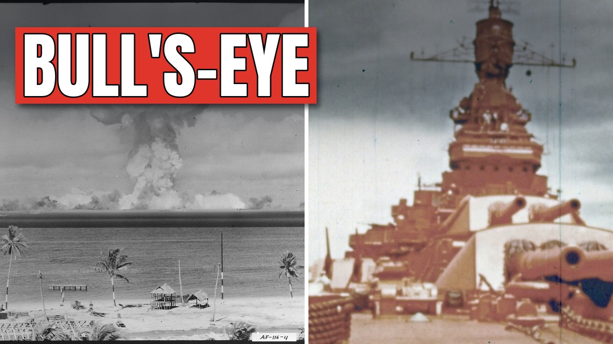

Video file: uss_nevada_full_v1.mp4 (14:13, 1080p) · Fleet's End video #3
1. Title
Two Atomic Bombs Couldn't Sink Her. Then What Did?
vidIQ 94. Alternates for Test & Compare: “This Battleship Was the Bull's-Eye for an Atomic Bomb” (92) · “The Navy Dropped an Atomic Bomb on Its Own Battleship” (89). Fallback: “The Battleship That Survived Two Atomic Bombs” (87). Never say “the only ship”: New York and Pennsylvania also survived both tests.
2. Thumbnails

V1, upload with this one V1_survived_2_a_bombs.jpg

V3, Test & Compare (owner OK: “THEY MISSED” = the first bomb) V3_they_missed.jpg

V2, Test & Compare V2_bulls_eye.jpg
Judge the Test & Compare winner on day 7–14, not day 1. Space this video ≥ 2 days from the Mallows Bay upload (2–3 a week max).
3. Upload settings
Setting
Value
Altered or synthetic content
YES (AI narration; maps and graphics made for this channel)
Made for kids
No
Category
Education
Language / caption language
English / English
License
Standard YouTube License
Chapters
Automatic from the timestamps in the description
End screen
The last 18 s are an end-screen map (right half clear): add “subscribe” + one “best for viewer” video
Comments
On. Post and pin the comment in section 6 right after publishing; reply to family/veteran stories in the first 48 h
USS Nevada, USS Nevada BB-36, battleship, atomic bomb, Operation Crossroads, Bikini Atoll, Bikini atomic tests, Able and Baker, Pearl Harbor, Battleship Row, US Navy history, naval history, WWII battleship, ship history, shipwreck, wreck found, target ship, Cold War history, 1946 atomic test, what happened to USS Nevada
6. First comment (post it, then pin it)
Sources for this video: Nevada's Pearl Harbor action report and the CinCPac report; the Navy's BuShips and BuAer inspection reports on Tests Able and Baker; "Bombs at Bikini" (1947); the National Park Service archaeology study of Crossroads; the 2022 Journal of Maritime Archaeology paper on the sinking and the wreck; SEARCH Inc. and National Geographic on the 2020 discovery. Nevada was not the only ship to survive both tests; New York and Pennsylvania did too. Narration is an AI voice. If you spot a mistake, tell us here and we will correct it in the pinned comment and the next upload. What should the Navy have done with her?
7. Before you press Publish
☐
Watched the master once; names sound right (listen to voice_sample/names_nevada.mp3: Bikini, Kwajalein, Waipio, boatswain, forecastle, Cherbourg, Toulon)
☐
“Altered or synthetic content” = Yes
☐
Thumbnail V1 uploaded; V3 + V2 added in Test & Compare